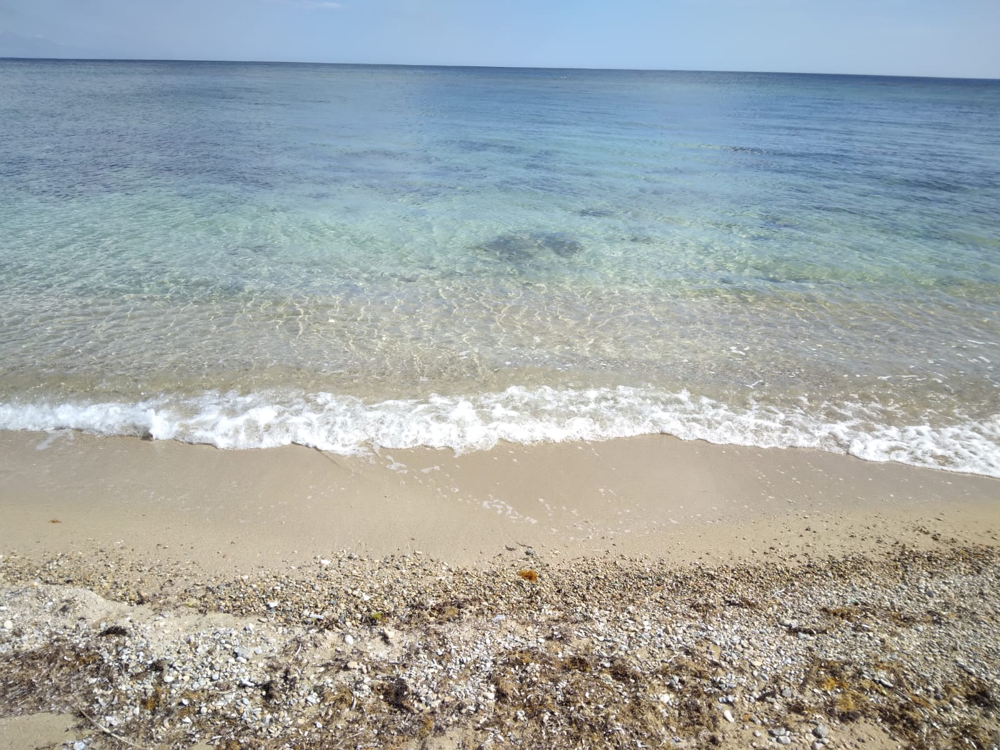
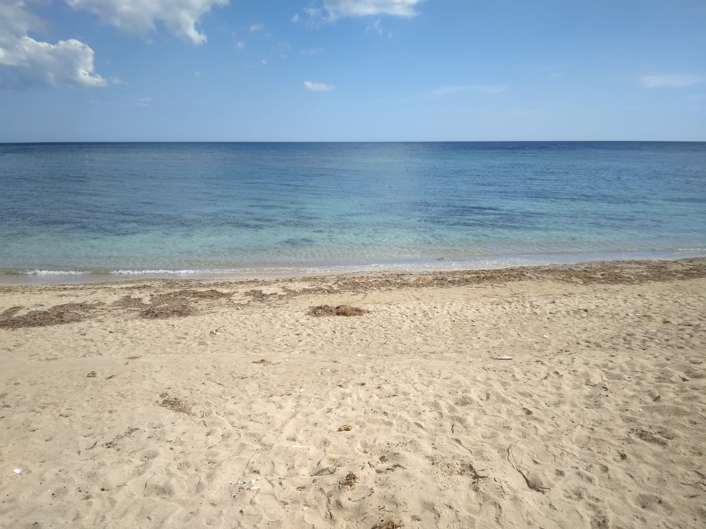
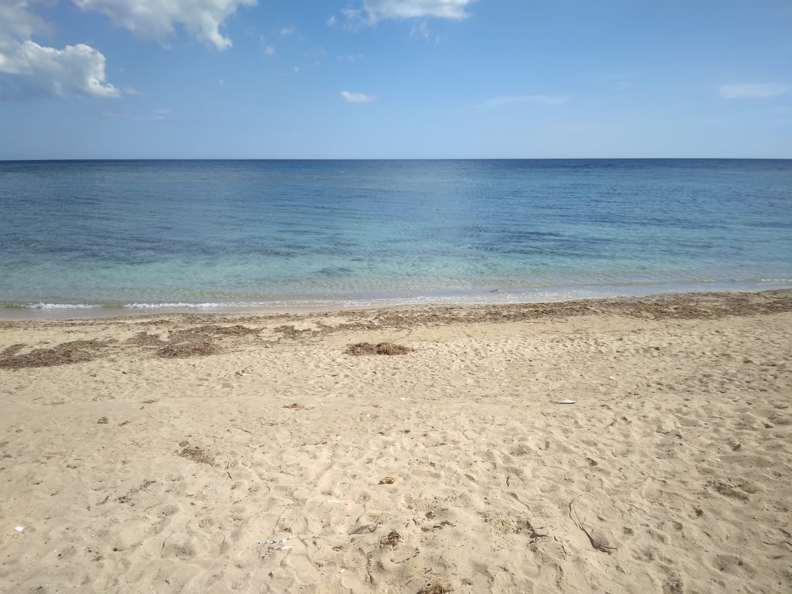

🌊 La Spiaggia e il Mare
Acque cristalline turchesi con fondali bassi sabbiosi, ideali per bambini, famiglie e snorkeling. Sabbia impalpabile come farina, lambita da dune di macchia con ginepri secolari. Estate calda ma ventilata, perfetta per kitesurf e beach volley.
🏰 La Torre Storica
Costruita nel 1570 dagli Aragonesi per avvistare pirati saraceni, oggi parzialmente sommersa dall'erosione marina. Alta 15 metri originariamente, domina il litorale come icona del Salento. Leggende locali narrano tesori nascosti nei fondali vicini.

📍 Come Arrivare e Servizi
A 5 km da Salve (centro abitato con market, farmacie), 10 min da Leuca. Accesso facile da SP358, parcheggio gratuito lungo la litoranea. Lidi attrezzati con bar, noleggio pedalo', ombrelloni. Zona libera estesa, cani ammessi in aree dedicate.
🌅 Attrazioni Vicine
Pescoluse (Maldive Salento) a 5 km, Torre Vado con porto turistico a 3 km, Capo d'Oro e Ciolo per escursioni. Interno: Ugento (museo archeologico), Patù (chiese rupestri). Ideale base per scoprire Capo Santa Maria di Leuca.
📸 Galleria Foto
 
